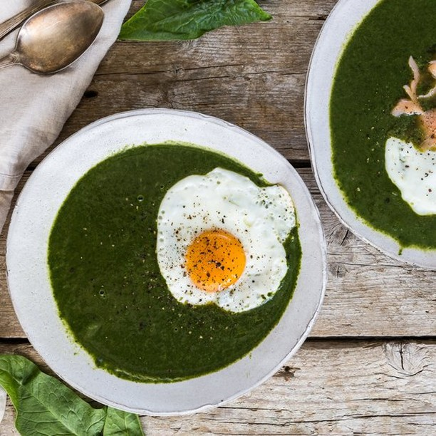

Špenátová polievka podľa @jemezdravo.eu — Normy Jedál
K jari patrí zelená. A zelená patrí aj na tanier. Čo poviete na krémovú špenátovú polievku so smotanou? So strateným vajcom alebo údeným lososom postačí aj na ľahkú večeru. Aj vy milujete špenát? Nechajte nám v komentároch toto emoji "🌱".
🥄 Špenátová polievka 🥄
Príprava: 20 minút | Tepelná úprava: 25 minút | Náročnosť: ľahké | Počet porcií: 4
Nutričné hodnoty 1 porcie:
169 kcal
7 g bielkovín
6 g tukov
22 g sacharidov
INGREDIENCIE
1 lyžica olivového oleja
1 jarná cibuľka
1 šalotka
1 balenie mrazeného špenátu
800 ml zeleninového vývaru
1 lyžička sušeného cesnaku
1 lyžička majoránu
200 ml vody
100 ml sójovej smotany
soľ
čierne korenie
POSTUP PRÍPRAVY
1. V hrnci na lyžici olivového oleja orestujte nadrobno nakrájanú cibuľku a šalotku.
2. Pridajte prepláchnuté listy špenátu a restujte cca 5 minút.
3. Zalejte vývarom, prikryte pokrievkou a nechajte variť 10 minút.
4. Po 10 minútach polievku, odstavte, pretlačte do nej 3 strúčiky cesnaku a rozmixujte tyčovým mixérom dohladka.
5. Polievku dochuťte soľou a korením a zjemnite sójovou smotanou.
6. Podávajte napríklad so strateným vajcom alebo údeným lososom.
#varim #slovakfood #polievka #polievky #polievkadna #spenat #spenatovapolievka #vajco #mojejedlo #spenatova #dnesvarimja #jedlo #hravoazdravo #kosice #varenie #zdravo #dobrejedlo #dnesvarim #chutne #dnesjemfit #precelurodinu